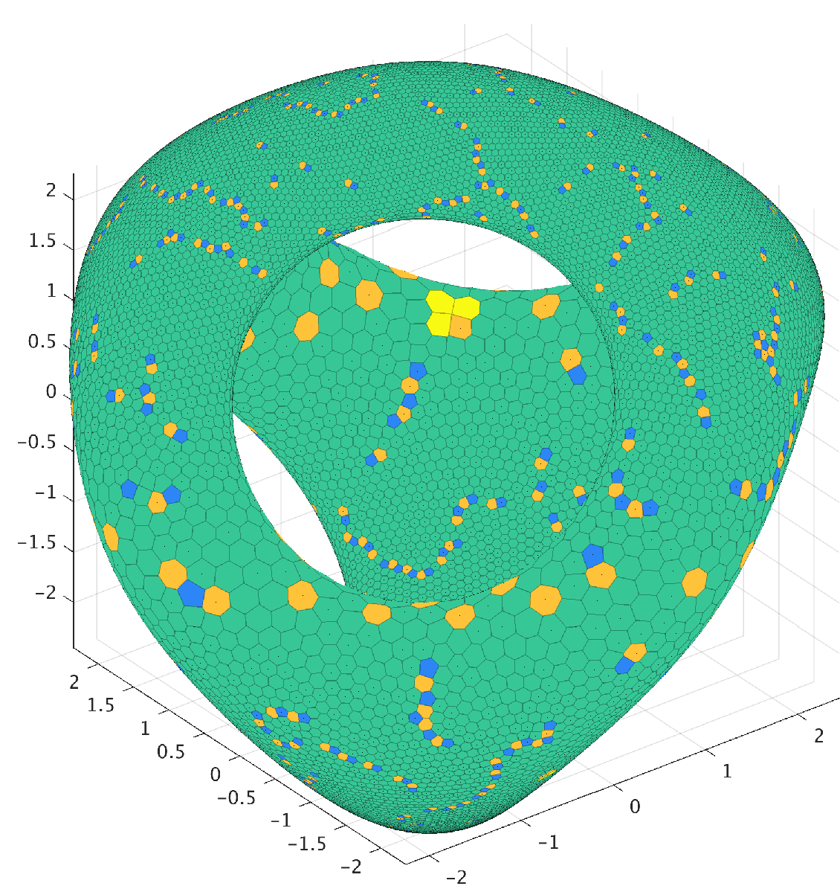

This weekly seminar will cover topics related to point distributions, potential and discrepancy theory, and adjacent areas. The target audience is young researchers working in the listed directions, but everyone is welcome! Please share this information with anyone interested.
We meet on Wednesdays, at 10am CDT/11am EDT/5pm CEST. To join the seminar via Zoom, follow the link. It becomes active half an hour before the meeting. To join our mailing list, go here.
Previous talks are available in the Archive.
We meet on Wednesdays, at 10am CDT/11am EDT/5pm CEST. To join the seminar via Zoom, follow the link. It becomes active half an hour before the meeting. To join our mailing list, go here.
Previous talks are available in the Archive.
Coming up
Kateryna Pozharska (Institute of Mathematics, NAS of Ukraine)
Sampling recovery of functions from reproducing kernel Hilbert spaces in the uniform norm
Abstract
We study the recovery of multivariate functions from reproducing kernel
Hilbert spaces in the uniform norm. Surprisingly, a certain weighted least
squares recovery operator which uses random samples from a distribution,
depending on the spectral properties of the corresponding embedding, leads to
near optimal results in several relevant situations. As an application we
obtain new recovery guarantees for Sobolev type spaces related to Jacobi type
differential operators on the one hand and classical multivariate periodic
Sobolev type spaces with general smoothness weight on the other hand. By
applying a recently introduced sub-sampling technique related to Weaver's
conjecture, we further reduce the sampling budget and improve on bounds for
the corresponding sampling numbers.
This is a joint work with Tino Ullrich.
This is a joint work with Tino Ullrich.
Paper: [arXiv]
Slides: [pdf]
Schedule and speakers
The schedule is given in the local time for CST (Chicago) / EST (New York) / CET (Paris, Berlin) time zones; during daylight saving time it remains 10am/11am/5pm, respectively.
| Date | Time | Speaker | Affiliation | Title |
|---|---|---|---|---|
| Jun 2 | *11:30am CDT/12:30pm EDT/6:30pm CEST | Austin Anderson and Alex White | Florida State | Asymptotics of Best Packing and Best Covering |
| Jun 9 | 10am CDT/11am EDT/5pm CEST | Alan Legg | Purdue Fort Wayne | Logarithmic Equilibrium on the Sphere in the Presence of Multiple Point Charges |
| Jun 16 | 10am CDT/11am EDT/5pm CEST | Assaf Goldberger | Tel Aviv U | Configurations, Automorphisms and Cohomology |
| Jun 30 | 10am CDT/11am EDT/5pm CEST | Robert McCann | UToronto | Maximizing the sum of angles between pairs of lines in Euclidean space |
| Jul 7 | 10am CDT/11am EDT/5pm CEST | Giuseppe Negro | U of Birmingham | Intermittent symmetry breaking for the maximizers to the Agmon-Hörmander estimate on the sphere |
| Jul 14 | 10am CDT/11am EDT/5pm CEST | Alexander McDonald | U of Rochester | Volumes spanned by k-point configurations in $\mathbb R^d$ |
| Jul 21 | 10am CDT/11am EDT/5pm CEST | Jonathan Passant | U of Rochester | Configurations and Erdős style distance problems |
| Jul 28 | 10am CDT/11am EDT/5pm CEST | Fátima Lizarte | U of Cantabria | A sequence of well conditioned polynomials |
| Aug 4 | 10am CDT/11am EDT/5pm CEST | Jordi Marzo | U of Barcelona | Quadrature rules, Riesz energies, discrepancies and elliptic polynomials |
| Aug 18 | 10am CDT/11am EDT/5pm CEST | Damir Ferizović | TU Graz | The spherical cap discrepancy of HEALPix points |
| Aug 25 | 10am CDT/11am EDT/5pm CEST | Aicke Hinrichs | JKU Linz | Dispersion - a survey of recent results and applications |
| Sep 1 | 10am CDT/11am EDT/5pm CEST | Friedrich Pillichshammer | JKU Linz | $L_2$ star, extreme and periodic discrepancy |
| Sep 8 | 10am CDT/11am EDT/5pm CEST | Jan Vybíral | Czech Technical University | Dispersion of point sets in high dimensions |
| Sep 15 | 10am CDT/11am EDT/5pm CEST | Nihar Gargava | EPFL | Lattice packings through division algebras |
| Sep 22 | 10am CDT/11am EDT/5pm CEST | Daniel Rudolf | University of Göttingen | On the spherical dispersion |
| Sep 29 | 10am CDT/11am EDT/5pm CEST | Kateryna Pozharska | Institute of Mathematics, NAS of Ukraine | Sampling recovery of functions from RKHS in the uniform norm |
Organizers
| Ryan Matzke | U of Minnesota | matzk053@umn.edu |
| Tetiana Stepaniuk | Universität zu Lübeck | stepaniuk@math.uni-luebeck.de |
| Alex Vlasiuk | Vanderbilt University | oleksandr.vlasiuk@gmail.com |
| |
||
| Previously: Damir Ferizović | TU Graz | damir.ferizovic@math.tugraz.at |